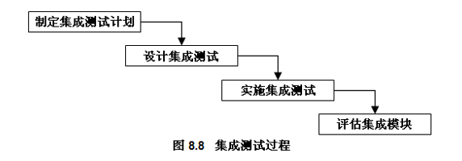

第一章 软件工程
软件的定义与分类
定义
狭义上的软件是指通过下载储存在计算机装置中的数码化比特（bit）
广义的软件则包括所有根据用户指令、指示或要求的运营体系、系统或设备的支持系统
- 根据软件构成的基本要素：软件是与计算机系统操作有关的程序、规程、规则及任何与之有关的文档。
- 根据软件的组织结构：软件是由计算机软件配置项、计算机软件部件和计算机软件单元构成的层次结构。
分类
软件危机（Software Crisis）
背景
软件规模越来越大，复杂度不断增加，软件需求量增大。
特征
- 软件开发周期大大超过规定日期
- 软件开发成本严重超标
- 软件质量难以保证
表现
- 对软件的开发成本和进度估算不准确
- 用户对已完成的软件不满意的现象经常发生
- 软件可维护性差
- 软件可移植性差
- 软件质量不可靠
- 软件产品供不应求
- 软件产品价格昂贵
- 软件缺乏适当的文档资料
原因
- 软件开发无计划性
- 用户需求不明确
- 需求分析不充分
- 缺乏正确的理论指导
- 开发过程无规范
- 开发规模越来越大
- 软件开发复杂度越来越高
- 缺乏软件评测手段
解决方法
- 按照工程化的概念、原理、技术和方法来组织软件开发来组织软件开发
- 使用在实践中总结出来的、成功的软件开发技术和方法，研究探索更为有效的技术和方法，，以提供关于软件开发的一般原则、工作框架、开发策略和实用技术
- 开发并使用行之有效的软件开发工具和环境，以提高软件开发人员的工作效率，减少人为差错出现的可能性。
软件工程
定义
- 采用工程的概念、原理、技术和方法来开发与维护软件，把经过时间考验而证明正确的管理技术和当前能够得到的最好技术、方法与工具结合起来，就是“软件工程”
- 软件工程是“软件开发、运行、维护和引退的系统方法”
三要素
- 方法与技术
- 工具与环境
- 管理与标准
基本原理
- 分阶段的生命周期计划严格管理性。
- 坚持进行阶段评审。
- 实行严格的产品控制。
- 采用现代程序设计技术。
- 结果应能清楚地审查。
- 开发小组的人员应少而精。
- 承认不断改进软件工程实践的必要性。
软件工程方法学
定义
软件开发的系统化方法，是一套完整的软件开发技术，包括原则、方法、过程和工具，是每一阶段活动、产品、验收的步骤和完成准则
结构化方法（SM，Structured Method）
基本思想
使用工程的思想和工程化的方法,按照用户至上的原则，结构化、模块化、自顶向下地对系统进行分析和设计，把一个复杂问题的求解过程分阶段进行,使得每个阶段处理的问题都控制在容易理解的范围内。
模型
过程
SA：把复杂问题自顶向下逐层分解，到底层时容易被描述和实现
SD：对程序结构、数据结构、过程细节和接口细节进行细化
SP：详细设计模块功能和处理过程，采用自顶向下、逐步求精的程序设计方法，使用顺序、选择、循环构造程序
特点
- 严格的分阶段计划
- 瀑布式开发模式
- 严格的技术审查和管理复查
- 各阶段采用结构化技术
面向对象方法（OO, Object-Oriented Method）
定义
把面向对象的思想应用于软件开发过程，指导开发活动的系统方法，是建立在“对象”概念基础上的方法学。
注：所谓面向对象就是基于对象概念，以对象为中心，以类和继承为构造机制，认识、理解、刻画客观世界，设计、构建相应的软件系统。
模型
过程
特点
- 以对象作为基本的软件构件
- 软件的定义和实现的统一
- 重视软件复用
- 通过逐步演化来完成软件开发
第二章 软件开发过程模型
软件生命周期
定义
从设计软件产品开始到软件产品不能再使用为止的时间周期。
内容
注：软件生命周期可以划分成若干个相互独立而又相互联系的阶段，每一阶段工作以上一阶段工作的结果为依据，并为下一阶段工作提供基础。
软件过程
定义
- 软件过程是指软件生命周期中的一系列相关过程，是将用户=需求转化为可执行系统的演化过程所进行的软件工程的全部活动，是用于生产软件产品的工具、方法和实践的集合
- 软件过程是关系复杂的软件活动的集合，各活动之间有着严格密切的关系，有的是异步并行，有的是互为条件，因此实际软件过程中的软件活动存在复杂的网状关系。
- 软件过程是改进软件质量和组织性能的主要因素之一
必要性
- 提高软件企业的开发效率和产品质量；
- 有效地对软件开发项目进行管理；
- 有助于软件机构做出正确决策；
- 提高软件的可重用性和组间协作；
- 改善软件机构对软件的维护；
- 不断采用新的、更好的软件开发经验。

软件开发过程
定义
以生命周期各阶段的活动划分为基础，将用户需求转化为软件系统活动集合的过程。

过程
1.问题定义和可行性研究
- 评估项目“是否能够完成？”
- 给出功能、性能、接口等方面的要求，完成该软件任务的可行性研究
- 估计可利用的资源(计算机硬件，软件，人力等)、成本、效益、开发进度。
- 制定出完成开发任务的实施计划,连同可行性研究报告，提交项目管理部门审查
2.需求分析
- 回答“目标系统必须做什么？”
- 对待开发软件提出的需求进行分析并给出详细的定义。
- 编写软件需求说明书或系统功能说明书及初步的系统用户手册。
- 提交管理机构评审。
3.概要设计
- 概括回答“怎样实现目标系统?”问题
- 可以列出多种解决方案进行比较
- 把各项需求转换成软件的体系结构。结构中每一组成部分都是意义明确的模块，每个模块都和某些需求相对应
4.详细设计
- 具体回答“应该怎样具体地实现这个系统?”问题
- 对每个模块要完成的工作进行具体的描述，为源程序编写打下基础
- 编写设计说明书，提交评审
5.编码
- 把软件设计转换成计算机可以接受的程序代码，即写成以某一种特定程序设计语言表示的“源程序清单”
- 写出的程序应当是结构良好、清晰易读的，且与设计相一致的
6.软件测试
- 单元测试：查找各模块在功能和结构上存在的问题并加以纠正
- 组装测试：将已测试过的模块按一定顺序组装起来。
- 按规定的各项需求，逐项进行有效性测试，决定已开发的软件是否合格，能否交付用户使用
7.运行维护
- 改正性维护：运行中发现了软件中的错误需要修正。
- 适应性维护：为了适应变化了的软件工作环境，需做适当变更。
- 完善性维护：为了增强软件的功能需做变更。
瀑布模型
定义
从时间角度对软件开发和维护的复杂问题进行分解。
过程
两层含义
- 必须等前一阶段工作完成之后，才能开始后一阶段工作；
- 前一阶段的输出文档就是后一阶段的输入文档，因此，只有前一阶段的输出文档正确，后一阶段的工作才能获得正确的结果。
指导原则：推迟软件编码
理论上的瀑布模型

实际上的瀑布模型
实际的瀑布模型是带“反馈环”的，当在后面阶段发现前面阶段的错误时，需要沿图中左侧的红色反馈线返回前面的阶段，修正前面阶段的产品之后再回来继续完成后面阶段的任务。

优点
- 定义清楚，应用广泛；
- 可强迫开发人员采用规范的方法
- 严格地规定每个阶段必须提交的文档；
- 要求每个阶段交出的所有产品必须经过质量保证小组的仔细验证；
- 易于建模和理解；
- 便于计划和管理；
- 有支持生命周期模型的多种工具。
缺点
- 必须在开始时就知道大多数需求
- 不便于适应需求的变化；
- 在项目接近完成之前，产品不能投入==使用=；
- 可运行的软件交付用户之前，用户只能通过文档来了解产品。
适合的项目类型
- 在开发中，向下、渐进的路径占据支配地位，即要求在项目开始前，项目的需求已经被很好地理解，也很明确；
- 而且项目经理很熟悉为实现这一模型所需要的过程，同时解决方案在项目开始前也很明确；
- 类似的项目如公司的财务系统、库存管理系统及短期项目等。
V模型
定义
V模型是瀑布模型的一种变体，由于整个开发过程构造成一个V字形而得名。强调协作和速度

水平方向
左：分析和设计、软件设计实现过程、静态的测试过程
右：对分析和设计的结果进行测试、动态测试
垂直虚线左边是分析和设计，是软件设计实现的过程，同时伴随着质量保证活动─审核的过程，也就是静态的测试过程；垂直虚线右边是对左边结果的验证，是动态测试的过程，即对分析和设计的结果进行测试，以确认是否满足用户需求。左右两边的对应关系如下：
- 需求分析对应验收测试；
- 概要设计对应系统测试；
- 详细设计对应集成测试；
- 软件编码对应单元测试。
垂直方向
水平虚线上部，需求分析、系统定义和验收测试等工作主要是面向用户。
水平虚线下部是技术工作，主要由工程师、技术人员完成。 从垂直方向看，越在下面，白盒测试方法使用越多，中间部分是灰盒测试方法。在验收测试过程中，使用黑盒测试方法。

原型模型
背景
为解决瀑布模型需求理解困难、开发周期长、见效慢等问题，借助第4代程序开发语言而产生的一种软件开发方法。
定义
软件开发人员先根据用户提出的软件定义，快速开发一个原型，向用户展示。然后用户根据这个原型提出修改意见，再进一步修改、完善，确认软件系统的需求并达到一致的理解。
原型
快速建立起来的可以在计算机上运行的程序，它所能完成的功能往往是最终产品能完成的功能的一个子集。
过程
- 第一步是=快速建立一个能反映用户主要需求的原型系统，让用户在计算机上试用它，通过实践来了解目标系统的概貌;
- 用户试用原型系统之后会提出修改意见，开发人员按照用户的意见快速地修改原型系统，然后再次请用户试用… …
- 一旦用户认为这个原型系统能做他们所需要的工作，开发人员便可据此书写规范说明文档，根据这份文档开发出的软件便可以满足用户的真实需求

本质：快速
- 开发人员应该尽可能快地建造出原型系统，以加速软件开发过程，节约软件开发成本。
- 原型的用途是获知用户的真正需求，一旦需求确定了，原型将被抛弃。
- 因此，原型系统的内部结构并不重要，重要的是，必须迅速地构建原型然后根据用户意见迅速地修改原型。
优点
- 直观形象，符合人们认识事物循序渐进的规律，容易被接受；
- 有效避免开发人员和用户对需求理解的不一致性；
- 及时暴露问题，及时反馈，确保系统的正确性；
- 开发周期短、成本低、软件能够尽早投入使用。
缺点
- 为了加快开发速度，常常导致软件质量的降低；
- 没有严格的开发文档，维护困难；
- 缺乏统一的规划和开发标准；
- 难以对系统的开发过程进行度量。
适用条件
- 用户需求不确定或经常发生变化；
- 开发人员经验不丰富；
- 开发规模不大、不太复杂的系统，因为大型系统不经过整体的分析和设计是不行的。
增量模型
定义
首先创建一组核心功能，或者是项目至关重要的最高优先级的系统，或者是能够降低风险的系统。随后基于核心功能反复扩展，逐步增加功能以提高性能。
特点
增量模型综合了瀑布模型和原型模型，降低了取得初始功能之前的成本，强调采用构建方法来控制更改需求的影响，提高了创建可操作软件系统的速度

RAD模型（Rapid Application Development，快速应用开发）
定义
增量型的软件开发过程模型，强调极短的开发周期，是瀑布模型的一个“高速”变种，通过大量使用可复用构件，采用基于构件的建造方法进行快速开发。

缺点
- 并非所有应用都适合RAD。
- 开发人员和客户在很短时间内完成一系列的需求分析，任何一方配合不当都会导致RAD项目失败。
- RAD不适合技术风险很高的软件项目。
适合的项目类型
- 快速应用开发适合很小且具有探索性质的项目。
- 适合一个复杂度从小到大变化的项目，例如重整企业的信息系统
大多数软件开发项目都采用瀑布模型原因
- 软件开发单位的软件工程工作尚处于初级阶段，软件开发人员和管理人员既缺乏经验，又无历史数据可供借鉴，因此，需要一种简单易行的组织方式。
- 结构化方法学是系统工程中最成熟的方法学，目前大多数软件开发都以结构化开发方法学为基础。在与结构化方法学相适应的软件开发过程模型中，瀑布模型最为简单实用，行之有效。
- 有关软件开发的现行国家标准和国家军用标准都是以瀑布模型为基础制定的。
选择开发过程模型遵守的原则
- 开发过程模型应与软件项目的特点相适应；
- 开发过程模型应与采用的软件开发技术相适应；
- 开发过程模型应满足整个应用系统的开发进度要求；
- 开发过程模型应有助于控制和消除软件开发风险；
- 开发过程模型应有可用的计算机辅助工具的支持；
- 开发过程模型应与用户和软件开发人员的知识和技能水平相适应；
- 开发过程模型应有利于软件开发的管理和控制
第三章 可行性研究
定义
在项目投资决策前，对拟建项目进行全面的技术经济分析与论证，并对其做出可行或不可行评价的一种科学方法
目的
在尽可能短的时间内以最小的代价确定该项目是否能够开发，是否值得开发。
实质
进行一次简化、压缩了的需求分析和设计过程，要在较高层次上以抽象的方式进行需求分析和设计过程。
技术可行性
定义
分析在特定条件下，技术资源的可用性和这些技术资源用于解决软件项目问题的可能性和现实性
进行技术可行性分析时，要注意以下一些问题：
- 全面考虑系统开发过程所涉及的所有技术问题
- 尽可能采用成熟技术
- 慎重引入先进技术
- 着眼于具体的开发环境和==开发人员=
- 技术可行性评价
经济可行性
定义
也叫投资/效益分析或成本/效益分析；分析开发软件项目所需要的花费，以及项目开发成功后所能带来的经济效益
通过比较成本和效益，就可以决定将要立项的软件项目是不是值得开发。一般比较的结论有三个：
- 效益大于成本，开发对企业有价值。
- 成本大于效益，不值得开发。
- 效益和成本基本持平，是否开发有待商榷。
社会可行性
定义
研究具有比较广泛的内容，它需要从政策、法律、道德、制度等社会因素论证软件项目开发的可行性和现实性.
运行环境可行性
从用户单位的管理体制、管理方法、规章制度、工作习惯、人员素质、数据资源积累、硬件和系统软件平台等多方面进行评估，以确定软件系统交付以后，是否能够在用户单位顺利进行。
法律可行性
分析软件项目是否会侵犯他人、集体或国家利益，是否违反国家法律，进而分析应承担的法律责任，并确定在法律上可行或不可行
成本／效益分析
定义
首先是估算待开发软件项目的开发成本，然后与可能取得的效益（有形和无形的）进行比较和权衡。
目的
从经济角度评价开发一个新软件项目是否可行。
主要方法和技术
- 资金的时间价值
- 投资回收期
- 投资回收率等
投资回收期
静态投资回收期
定义：用项目各年的净收入将全部投资回收所需要的年限。
计算公式：
如果投产后的每年净收益相等，或用年平均净收益计算时，计算公式为：

动态投资回收期
定义：在考虑资金时间价值条件下，按设定的利率回收全部投资所需要的时间。

投资收益率
定义：也称投资报酬率，是指项目达到设计生产能力后，一个正常年份的净收益额与项目总投资的比率。是财务盈利能力分析和考察项目投资盈利水平的重要指标。

投资利润率
定义：指项目投产后正常年份的利润总额或生产期年平均利润总额与项目总投资的比率。

投资利税率
定义：是指项目投产后正常年份的利税总额或生产期年平均利税总额与项目总投资的比率。

方案选择与决策
定义：依据大量的可行性研究资料，运用科学方法，进行正确的评估和判断，选出最优方案的过程。
确定型决策
选取收益值（或收益率）最大的方案，或损失值（损失率）最小的方案作为决策结果。
非确定型决策
指对未来可能发生的情况虽然有所了解，但又无法确定或无法估计发生概率情况下的决策。
- 最大收益值（率）法-----------大中取大
- 最大最小收益值（率）法------- 小中取大
数据流图
概念
一种图形化技术，描绘信息流和数据从输入移动到输出的过程所经受的变换。
- 数据流图是描绘系统的逻辑模型，图中没有任何物理元素，只是描绘信息在系统中流动和处理情况
作用
- 数据流图可以作为交流信息的工具
- 数据流图的另一个主要用途是作为分析和设计的工具
常用符号
- 源点/终点：表示数据流的产生处和最终抵达处；
- 处理：也称变换数据的处理或加工。表示对数据进行的操作，是数据变换的原因；
- 数据存储：表示处在静止状态，需要暂时存储的数据；
- 数据流：表示含有固定成分的动态数据及流动方向。

应用
- 数据流图支持用结构化方法刻画系统功能
- 数据流图考虑“做什么”，而不考虑“怎么做”
- 源点终点相同


数据字典
定义
关于数据信息的集合，也就是对数据流图中包含的所有元素定义的集合。
作用
数据字典通过对数据流、数据元素、数据存储、加工的描述，对数据流图的各种成分起到注解、说明作用，给这些成分赋予了实际内容。
注：数据流图和数据字典共同构成系统的逻辑模型，没有数据字典的数据流图就不严格，没有数据流图的数据字典也难于发挥作用。只有数据流图和对数据流图精确定义的数据字典放在一起，才能共同构成系统的规格说明。
示例


第四章 需求分析
需求
定义
指明系统必须实现什么的规约，它描述了系统的行为、特性或属性，是在开发过程中对系统的约束
目的
- 清楚地理解所要解决的问题，完整地获取用户要求；
- 刻划出软件的功能和性能；
- 指明软件与其他系统元素的接口；
- 建立软件必须满足的约束。
关键：准确地回答“系统必须做什么?”
重要性
- 获得用户需求的有效途径
- 决定项目成功的关键因素
- 系统分析和软件设计的桥梁
- 控制软件质量的重要阶段
任务
软件开发就是实现目标系统的物理模型
定义：借助于当前系统的逻辑模型导出目标系统的逻辑模型，解决目标系统 “做什么” 的问题。
实现步骤
- 获得当前系统的物理模型
- 抽象出当前系统的逻辑模型
- 导出目标系统的逻辑模型
- 最终目标系统的物理模型是由逻辑模型经实例化，即具体到某个业务领域而得到的。
过程
“获取用户需求→分析用户需求→编写需求文档→需求分析评审”如果评审通过，则需求分析结束；如果通不过，可能是由于编写需求文档、分析用户需求、获取用户需求等某个步骤引起的，要返回到相应的步骤进行修改。
1.获取用户需求
与用户沟通获取需求的方法
- 访谈
- 面向数据流自顶向下求精
- 简易的应用规格说明技术
2.分析用户需求
主要工作
对问题的分析和方案的综合
定义：分析员要从数据流和数据结构出发，逐步细化所有软件功能，分析是否满足功能要求。依据功能需求、性能需求和运行环境需求等，剔除不合理的部分，增加需要的部分。最终综合成系统的解决方案，给出目标系统的详细逻辑模型。
方法
- 面向数据流的结构化分析方法（简称SA）
- 面向数据结构的Jackson方法（简称JSD）
- 面向对象的分析方法（简称OOA）
- 用于建立动态模型的状态迁移图或Petri网
3.编写需求文档
定义
把描述需求的文档叫做软件需求规格说明书。
- 编写软件需求文档的方法
- 最好用结构化和自然语言编写文本型文档；
- 建立图形化模型；
- 编写形式化规格说明。
2.编写软件需求文档要注意的问题
- 需求说明要全面；
- 功能细节的描述要准确，不能有歧义；
- 需求说明书要将用户的想法提炼成可实现的功能
4.需求分析评审
评审主要内容
- 系统定义的目标是否与用户的要求一致
- 系统需求分析阶段提供的文档资料是否齐全；
- 文档中的所有描述是否完整、清晰，是否准确地反映了用户要求；
- 与所有其它系统成分的重要接口是否都已经描述
- 所开发项目的数据流与数据结构是否完整；
- 所有图表是否清楚，在不补充说明的情况下能否理解；
- 主要功能是否已包括在规定的软件范围之内，是否都能充分说明；
- 设计的约束条件或限制条件是否符合实际；
- 开发的技术风险是什么；
- 否考虑过软件需求的其它方案
- 是否考虑过将来可能会提出的软件要求；
- 是否详细制定了检验标准，这些标准能否对系统定义成功地进行确认；
- 有没有遗漏、重复或不一致的地方；
- 软件成本进度估算是否受到了影响等。
方法
结构化方法
基本思想
- 分解：对于一个复杂系统，为了将复杂性降低到能掌控的程度，把大问题分解成若干小问题，然后分别解决
- 抽象。用最本质的属性表示一个系统的方法，即先考虑问题最本质的属性，暂把细节略去，以后再逐层添加细节，直至涉及到最详细的内容为止。
步骤
- 了解当前系统的工作流程，=获得当前系统的物理模型；
- 抽象出当前系统的逻辑模型；
- 建立目标系统的逻辑模型；
- 进一步补充和优化。
分析工具
- 数据流图（Data Flow Diagram,DFD） 用来创建功能模型，描述了信息流和数据转换。与之搭配的有数据字典、描述加工逻辑的结构化语言、判断表、判断树。
- 实体关系图(Entity-Relationship Diagram,E-R图)来创建数据模型，描述系统中所有重要的数据对象；
- 状态转换图 （State-Transition Diagram,STD）用来创建行为模型，描述系统状态如何响应外部事件，而进行转换。
画分层DFD图的原则
一般原则
- 先全局后局部；
- 先整体后细节；
- 先抽象后具体。
具体原则
- 数据守恒与数据封闭原则。
- 加工分解原则。
- 子图与父图的“平衡”。
- 合理使用文件。
例子


分层DFD图的改进
检查数据流的正确性
- 数据守恒；
- 子图、父图平衡；
- 文件使用是否合理。特别注意输入∕输出文件的数据流。
改进DFD图的易理解性
- 简化加工之间的联系；
- 改进分解的均匀性；
- 适当命名。
实体-联系图（E-R）的符号
属性
- 实体(即数据对象)
- 关系
- 属性
矩形框：实体
菱形框：关系
椭圆形或圆角矩形：实体(或关系)的属性
直线：实体(或关系)与其属性连接起来

优缺点
优点
结构化分析方法是软件需求分析中公认的、有成效的、技术成熟的、使用广泛的一种方法，适合开发数据处理类型软件的需求分析。利用图形等半形式化工具表达需求，简明易读，也易于使用，为下一阶段的设计、测试、评价提供了有利条件。
缺点
- 不适合描述实时控制系统；
- DFD应与数据库技术中的实体联系图结合起来；
- DFD不适合描述复杂人机界面系统的需求；
- 描述软件需求的精确性有待提高。
用例建模
作用
- 对客户而言，用例模型指明了系统的功能，描述了系统如何使用。
- 对开发者而言，用例模型帮助他们理解系统要做什么
- 对系统测试员而言，要根据用例来测试系统，以验证系统是否完成了用例指定的功能。
- 对项目管理人员来说，用例模型为项目目标进度管理和风险管理提供了依据
过程
- 确定系统的范围和边界
- 确定系统的执行者和用例
- 对用例进行描述
- 定义用例之间的关系
- 审核用例模型
用例图
定义：显示一组用例、参与者以及它们之间关系的图。
用例图从用户的角度而不是开发者的角度来描述对软件产品的需求，分析产品所需的功能和动态行为 用例图常用来对需求建模，用例图是至关重要的，它的正确与否直接影响到客户对最终产品的满意度
内容
参与者
系统外部的一个人或物，它以某种方式参与了系统的执行过程
用例
对一组序列动作的描述，系统执行这些动作将对用例的参与者产生可以观察的结果
表示方法：用实线的椭圆表示
用例可以用事件流来描述这一对话的细节内容
事件流：1.基本事件流 2.备选事件流
泛化、扩展和包含关系

泛化：同一业务目的的不同技术实现;
当多个用例共同拥有一种类似的结构和行为的时候我们可以将它们的共性抽象成为父用例，其他的用例作为泛化关系中的子用例。

包含：提取公共交互，提高复用
包含是指基本用例(base use case)会用到包含用例(inclusion)，具体地讲，就是将包含用例的事件流插入到基础用例的事件流中。包含用例是可重用的用例──多个用例的公共用例

扩展：“冻结”基用例以保持稳定
将扩展用例的事件流在一定的条件下按照相应的扩展点插入到基础用例中。 基础用例不必知道扩展用例的任何细节，它仅为其提供扩展点。 扩展用例的行为是否被执行要取决于主事件流中的判定点。

包含用例与扩展用例的区别
- 相对于基础用例，扩展用例是可选的，而包含用例则不是。
- 如果缺少扩展用例，基础用例还是完整的，而缺少包含用例，则基础用例就不完整了。
- 扩展用例的执行需要满足某种条件，而包含用例不需要。
- 扩展用例的执行会改变基础用例的行为，而包含用例不会。
第五章 概要设计
定义
建立目标系统的逻辑模型；根据数据流图，确定软件系统各主要组成部分之间的关系。
主要任务
把需求分析得到的DFD转换为软件结构
具体任务
将一个复杂系统按功能进行模块划分，建立模块的层次结构及调用关系，确认模块间的接口及人机界面。
设计原则
- 抽象
- 逐步求精
- 模块化
- 信息隐藏
模块独立
模块独立性（ module independence)
- 模块只完成系统要求的相对独立的功能
- 符合信息隐蔽原则
- 模块间关联和依赖程度尽量小
优点
- 修改工作量小、错误传播范围小、便于功能扩充
- 容易开发、测试和维护
衡量模块独立性的两个准则
- 耦合性
- 内聚性
设计目的：低耦合、高内聚
模块耦合
数据耦合
定义
数据耦合属松散耦合。一模块访问另一模块时，通过数据参数交换输入、输出信息
标记耦合
定义
两个模块通过传递数据结构加以联系，或都与一个数据结构有关系，则称这两个模块间存在标记耦合


控制耦合
定义
模块之间传递的是控制信息（如开关、标志、名字等），控制被调用模块的内部逻辑。

去除模块间控制耦合的方法
- 将被调用模块内的判定上移到调用模块中进行
- 被调用模块分解成若干单一功能模块
外部耦合
定义
- 一组模块都访问同一全局简单变量而不是同一全局数据结构，而且不是通过参数表传递该全局变量的信息，则称之为外部耦合。
- 外部耦合引起的问题类似于公共耦合，区别在于在外部耦合中不存在依赖于一个数据结构内部各项的物理安排。
公共耦合
定义
一组模块引用同一个公用数据区（也称全局数据区、公共数据环境）。
公共数据区
- 全局数据结构
- 共享通讯区
- 内存公共覆盖区等
引起的问题
- 所有公共耦合模块都与某一个公共数据环境内部各项的物理安排有关，若修改某个数据的大小，将会影响到所有的模块
- 无法控制各个模块对公共数据的存取，严重影响软件模块的可靠性和适应性
- 公共数据名的使用，明显降低了程序的可读性
内容耦合

模块间耦合强度

耦合强度依赖的因素
- 一模块对另一模块的引用
- 一模块向另一模块传递的数据量
- 一模块施加到另一模块的控制的数量
- 模块间接口的复杂程度
内聚性
定义
又称块内联系。指一个模块内部各个元素彼此结合的紧密程度的度量。
若一个模块内各元素（语句之间、程序段之间）联系的越紧密，则它的内聚性就越高

耦合、内聚与模块独立性关系
- 耦合与内聚都是模块独立性的定性标准，都反映模块独立性的良好程度。
- 耦合是直接的主导因素，内聚则辅助耦合共同对模块独立性进行衡量
- 设计要求：低耦合，高内聚
图形工具
层次图
- 描述软件的层次结构。
- 层次图中，一个方框代表一个模块，方框间的连线表示调用关系。
HIPO 图
- HIPO 图=层次图＋ IPO 图
结构图


设计方法
概念
把信息流映射成软件结构,信息流的类型决定了映射的方法.
变换型数据流基本模型
特点
具有明确的传入、变换（或称主加工）和传出界面的 DFD.

事务型数据流基本模型

事务中心的任务
- 接受输入数据（事务）
- 分析每个事务以确定它的类型。
- 根据事务类型选取一条活动通路
注：大型系统的 DFD 中，变换型和事务型往往共存

变换分析方法
定义
变换分析是一系列设计步骤的总称，经过这些步骤把具有变换流特点的数据流图按预先确定的模式映射成软件结构
步骤
- 区分输入、变换中心、输出部分，在 DFD 上标明分界线
- 第一级分解。设计顶层和第一层模块
- 第二级分解。自顶向下分解 SC 各分支，设计出每个分支的中、下层模块
事务分析
当数据流具有明显的事务特征时，应该采用事务流的分析方法
- 复审基本系统模型
- 复审和精化数据流图
- 确定数据流图的类型：变换流还是事务流
- 识别事务流的各个组成部分
事务型DFD划分为以下三个部分
- 接受路径部分：接受事务的输入
- 事务处理中心
- 动作路径部分
启发式设计策略
改进软件结构，提高模块独立性
- 通过模块分解或合并，降低耦合提高内聚
模块规模适中
- 模块过大：可理解程度下降
- 模块过小：开销大于有效操作系统接口复杂
- 在考虑模块的独立性同时，为了增加可理解性，模块的大小最好在 50 一 150 条语句左右，可以用 1 一 2 页打印纸打印，便于人们阅读与研究。
深度、宽度、扇出和扇入适中
- 减少扇出，追求高扇入
- 避免平铺结构
- 增加中间层降低扇出


使任意模块的作用域在其控制域内
- 作用域是指受模块内一个判定影响的所有模块的集合
- 控制域是指这个模块本身及其所有的下属模块的集合
降低模块接口的复杂度和冗余度
- 接口传递信息应简单且和模块功能一致。
- 模块的接口要简单、清晰、含义明确，便于理解，易于实现、测试与维护。
模块功能可预测
- 如果一个模块可以当作一个黑盒子，相同输入产生相同输出，其功能为可预测的。
- 若模块带有内部状态，其输出取决于该状态是，模块功能可能是不可预测的，难理解、难测试、难维护。
- 单一的模块具有高内聚。但模块功能过分局限，可使用范围将过分狭窄，缺乏灵活性和扩充性。
设计单入口单出口的模块
- 不要使模块间出现内容耦合
软件包封装
- 依据模块重要程度、被访问频率及两次引用的间隔等因素对模块分组
接口设计
定义
接口设计是概要设计和数据库设计的补充，从总体说明外部接口和内部接口
（1）外部接口：外部用户、软/硬件环境与软件系统的接口；
（2）内部接口：已划分出的模块间接口。
（3）需求分析中已明确了软件系统与其他外围系统的接口，这里应将这些接口与划分出的具体模块相联系，对接口的命名、顺序、数据类型和传递形式等作出具体规定，也就是应将这些接口分配到具体的模块中。
（4）接口设计的成果是《接口设计说明书》
概要设计与详细设计的衔接
- 一个软件系统具有层次性和过程性特征，在概要设计阶段，主要关心系统的层次结构，到了详细设计阶段，需要考虑系统的过程性，以及系统的各组成部分是如何联系在一起的。
- 软件系统是一个人机系统，在进行详细设计时，首先要分清楚哪些工作由计算机来做，哪些工作由手工完成，从而确定模块的实现方式，设计相应的实现方案。
第六章 详细设计
定义
概要设计是软件结构的建立过程,详细设计是对上述过程细节的完善，给出软件结构中各个模块的内部过程描述，从而在编码阶段可以把这个描述直接翻译成用某种程序设计语言书写的程序
详细任务
- 对软件项的每一软件部件进行详细设计，并形成文档。
- 软件项外部接口、软件部件之间以及软件单元之间接口的详细设计，并形成文档。
- 编制数据库的详细设计并形成文档。
- 必要时，应更新用户文档。
- 规定要测试软件单元的测试需求和进度安排，形成文档
- 更新软件集成的测试需求和进度安排。
- 根据评价准则评价软件详细设计和测试需求，并将评价结果形成文档。
- 实施联合评审。
结构化程序
定义
如果一个程序的代码块仅仅通过顺序、选择和循环这 3 种基本控制结构进行连接，而且每个代码块只有一个入口和一个出口，则称这个程序是结构化的。
结构化程序设计主要原则
使用语言中的顺序、选择、重复等有限的基本控制结构表示程序逻辑
选用的控制结构只准许有一个入口和一个出口
复杂结构用基本控制结构进行组合嵌套来实现
严格控制 GOTO 语句，仅在下列情形才可使用
- 用一个非结构化的程序设计语言去实现一个结构化的构造
- 在某种可以改善而不是损害程序可读性的情况下
结构程序设计技术的优越性
- 符合人类解决复杂问题的普遍规律，以显著提高软件开发的成功率和生产率；
- 用先全局后局部、先整体后细节、先抽象后具体的逐步求精过程开发出的程序有清晰的层次结构，容易阅读理解；
- 不使用GO TO语句，仅使用单入口单出口的控制结构，使得程序的静态结构和动态执行情况比较一致，易于阅读和理解；
- 控制结构有确定的逻辑模式，编写程序代码只限于很少几种直截了当的方式，因此源程序清晰流畅；
- 在修改和重新设计一个软件时可以重用的代码量最大；
- 逻辑结构清晰，有利于程序的正确性证明。
表示工具
图形工具
1.流程图(FC, flow chart)
三个基本成分
- 处理，方框表示
- 判断条件，菱形表示
- 控制流，箭头表示
基本控制结构
顺序、选择、先判断型循环、后判断性型循环、多情况选择
优点
对控制流程描绘直观、清晰、易于学习和掌握。
缺点
- 不是逐步求精的好工具，导致过早考虑控制流程，而不去考虑全局结构
- 可以不顾结构程序设计的思想，随意转移控制
- 不易表示数据结构
- 修改麻烦
2.盒图（ NS , N-S)
+。五种基本控制结构由五种图形构件表示。.jpg)
基本控制结构
- 顺序
- 选择
- 多分支选择
- “当”型循环
- “直到”型循环
优点
- 功能域确定
- 无法随意转移控制
- 容易确定局部与全局数据的作用域
- 容易表示嵌套关系
- 强制开发者按结构程序设计方法进行思考和描述其方案。
- 图形直观，容易理解设计意图
缺点
- 当分支嵌套层次多时，描绘时不方便
- 画图麻烦，修改麻烦
3.问题分析图 ( PAD, Problem Analysis Diagram )

基本控制结构
- 顺序
- 选择
- 多分支选择
- “当”型循环
- “直到”型循环
优点
- 设计出来的必然是结构化程序
- 程序结构十分清晰
- 程序逻辑，易读、易懂、易记
- 二维树形结构的图形
- 容易转换为高级语言源程序，可用工具自动完成，有利于提高软件可靠性和软件生产率。
- 支持自顶向下、逐步求精方法的使用。
语言工具
过程设计语言（PDL）------伪代码
定义
Procedure Design Language
伪码（ pseudo code ) ，是一种介于自然语言和形式化语言之间的语言，用于描述功能模块的算法设计和处理细节
特点
易编写，易理解，容易转换成源程序
特性
- 正文用严格的程序语言的基本控制结构分割，称为“外语法”，如 If … … Then … … E lse 、 While … … DO 、 Repeat … … Until 、 Case … … of 。
- 操作用自然语言表示，描述处理特点，称为“内语法”
- 具有数据说明机制，包括简单的（如纯量和数组）与复杂的（如链表或层次的数据结构）数据说明。
- 具有模块定义和调用机制，因此开发人员应根据系统编程所用的语种，说明PDL 表示的有关程序结构。
表格工具
判定表
与FC、N-S、PAD区别
程序流程图、N-S图、PAD图都不易清楚的描述含有多重嵌套的条件选择。判定表可以清晰的表示复杂的条件组合与其对应的处理之间的关系
定义
一张判定表由4部分组成，左上部列出所有条件，左下部是所有可能做的动作，右上部是表示各种条件组合的一个矩阵，右下部是和每种条件组合相对应的动作。判定表右半部实质上是一条规则，规定了与特定条件组合相对应的动作。

判定树
定义
判定树是判定表的变种，能清晰表示复杂的条件组合与操作之间的关系，形式简单，不需要做任何说明，是常见的系统分析工具。

第七章 软件实现
设计原则
1.控制输入量
2.减少输入延迟
3.减少输入错误
4.避免额外步骤
5.尽早保存
6.及时检查
输入格式
要求
既要便于操作人员录入，又要便于填表人员、现场工作人员填写
设计原始单据的原则是
- 便于填写；
- 便于归档；
- 单据的格式应能保证输入精度。
输入校验
校验方法
1.静态校验
2.二次输入校验
3.逻辑校验
4.金额计算校验
5.平衡校验
6.校验位校验
7.控制总数校验
8.数据类型校验
9.格式校验
10.顺序校验
输出设计
设计原则：系统输出的形式多种多样
报表方式
明细表、汇总表、分析表、历史表
图形方式输出
散点图、折线图、条形图、圆饼图
人机界面设计
设计规则
1.尽可能保持一致性
2.为熟练用户提供快捷键
3.提供丰富的反馈信息
4.设计完整的对话过程
5.提供错误预防机制
6.允许轻松的反向操作
7.支持内部控制轨迹
8.减少短时记忆负担
设计要素
1.用户界面适合于软件的功能（合适性）
2.容易理解
提高用户界面的可理解性
- 用户界面中的所有元素都不能出现错误文字，也没有令人费解（例如二义性、逻辑混乱）的文字。
- 图标按钮的含义一定要直观明了，最好给图标加文字说明（或提供充分而必要的提示），防止用户误解。
- 界面结构能够清晰地反映工作流程，以使用户按部就班地操作
- 文字信息和界面布局尽量和用户群体的使用习惯相匹配
3.及时反馈信息
- 及时反馈信息很重要，至少要让用户心里有数，知道该任务处理得怎么样了，有什么样的结果 。
- 对于一些重要的事务，当处理完成后，应当及时反馈给用户
- 如果某些事务处理不能提供进度等数据，那么至少要给出提示信息如“正在处理，请等待…”。最好是提供合适的动画，如下图所示，让用户明白软件正在干活，没有死机
4.防错处理
- 提供对输入数据进行检验的功能。
- 对于在某些情况下不应该使用的菜单项和命令按钮，应当将其“失效”（变成灰色，可见但不可操作）或者“隐蔽”
- 执行破坏性的操作之前，应当获得用户确认。
5.风格一致和必要的个性化
- 在一个软件的用户界面中，同类的界面元素应当有相同的视感和相同的操作方式
- 同一领域软件的用户界面应当有一定程度的相似性
6.合理的布局
- 首先，界面的总体布局应当有一定的逻辑性，最好能够与工作流程吻合。
- 其次，窗口（或页面）上的界面元素的布局应当整齐清爽。界面元素应当在水平或者垂直方向对齐，行、列的间距保持一致。
7.合理的色彩
- 应当限制一帧屏幕的色彩数目
- 应当根据对象的重要性来选择颜色，重要的对象应当用醒目的色彩表示。
- 使用颜色的时候应当保持一致性
- 在表达信息时，不要过分依赖颜色，因为有些用户可能色盲或色弱
8.适用户群体
- 在设计用户界面时应当尽可能多地了解用户的使用习惯和水平，努力使用户在操作软件的时候感觉不到差异和麻烦；为了达到这个目标，一般需要提供多种操作途径以适应各种水平的用户
9.最少的操作步骤
- 尽可能地替用户着想，用户应当用最少的操作步骤完成某项操作任务，获得最高的使用效率
10.可复用
- 复用就是指“利用现成的东西”，被复用的对象可以是有形的物体，也可以是无形的知识成果
- 复用有利于提高质量、提高生产率和降低成本
编程风格
优良编码风格的规则
- 节俭化
- 模块化
- 简单化
- 结构化
- 文档化
- 格式化
节简化
- 不使用不必要的变量和函数
- 避免变量重名，变量重名可导致很难被发现的错误。
- 尽量减小代码量。
- 尽量减少代码的执行时间，提高执行效率。
- 避免功能冗余的模块。
- 尽量不使用全局变量
模块化
- 确保物理和逻辑功能密切相关。
- 限定一个模块完成一个独立的功能，提高模块的内聚度。
- 检查代码的重复率，重复多的代码，要抽出来作为一个单独的模块。
简单化
- 采用直接了当的算法，避免使用技巧性高和难懂的代码。
- 使用简单的数据结构，避免使用多维数组、指针和复杂的表。
- 注意对象命名的一致性。
- 以手工的方式简化算术和逻辑表达式。
结构化
- 按标准化的次序说明数据；
- 按字母顺序说明对象名；
- 使用读者明了的结构化程序部件；
- 采用直截了当的算法；
- 根据应用背景排列程序各个部分；
- 不随意为效率而牺牲程序的清晰度和可读性；
- 让机器多做烦琐的工作，如重复、库函数；
- 用公共函数调用代替重复出现的表达式；
- 避免循环、分支的嵌套层数过高；
- 单入口单出口。
文档化
- 有效、适当地使用注释。
- 协调使用程序块注释和程序行注释。
- 保持文档和程序的同步。
格式化
- 始终采用统一缩进规则；
- 适当插入括号表明运算次序、排除二义性；
- 有效地使用空格符以区别程序的不同意群。
第八章 软件测试
定义
- 使用人工或自动手段来运行或测定某个系统的过程，其目的在于检验它是否满足规定的需求或是弄清预期结果与实际结果之间的差别
- 在规定的条件下对程序进行操作，以发现程序错误，衡量软件质量，并对其是否能满足设计要求进行评估的过程。(经典定义)
过程

原则
1.尽早和不断地进行软件测
2.开发人员原则上不测试自己的程序。
3.完全测试程序是不可能的。
4.软件测试是有一定风险的行为。
5.充分注意测试中的群集现象。
6.严格执行测试计划，排除测试的随意性。
7.应当对每一个测试结果进行全面检查。
8.妥善保存测试文档。
9.软件测试的Pareto法则（8:2)
10.不需要修复所有软件缺陷的原因
- 没有足够的时间；
- 修复风险太大；
- 不值得修复；
11.Bug的80%原则
12.软件测试在项目小组中的处事原则
- 尽早找出软件缺陷；
- 不要总报告坏消息；
- 控制情绪
方法
常用的方法有：静态测试，动态测试，覆盖分析，黑盒测试，白盒测试等。
静态测试
定义
不实际执行程序代码，主要对编程格式、结构等方面进行评估并发现存在的错误
优点
- 不必动态地运行程序，不必设计测试用例，不用判读结果；
- 可以由人工进行，充分发挥人的逻辑思维优势，检测出错误的水平很高；
- 不需要特别条件，容易开展。
代码检查
1.代码审查
2.代码走查
3.桌面检查
静态分析

动态测试
定义
通过运行软件来检查软件的动态行为和运行结果是否正确的方法。
内容
1.功能确认与接口测试；
2.覆盖率分析；
3.性能分析；
4.内存分析
黑盒测试
定义
又称为功能测试—把被测的程序模块看成一个黑匣子，即完全不考虑程序的内部结构和处理过程，测试仅在程序的接口上进行。按规格说明书要求的输入数据与输出数据的对应关系设计测试用例，是根据程序外部特征进行测试。
白盒测试
定义
把被测的程序看成一个透明的白匣子，即完全了解程序的内部结构和详细的处理过程，测试是在程序的内部结构上进行。即要求针对每一条逻辑路径都要设计测试用例，检查每一个分支和每一次循环的情况。
灰盒测试
定义
介于黑盒测试与白盒测试之间的测试
测试用例设计技术
定义
测试用例由输入数据和预期的输出数据两部分组成。
黑盒测试用例设计
主要目的
为了发现以下错误
- 是否有不正确或遗漏了的功能？
- 能否正确地接受输入？能否正确的输出结果？
- 性能上是否能够满足要求？
- 是否有初始化或终止性错误？
黑盒测试用例设计技术
- 等价类划分
- 边界值分析
- 因果图
等价类划分
定义
把所有可能的输入数据（包括有效或无效的），划分成若干数据类（等价类），然后从每个数据类中选取少数有代表性的数据做为测试用例。
缺点
这种方法完全不考虑程序的内部结构，只依据程序的规格说明来设计测试用例。
设计测试用例的步骤
划分等价类(列出等价类表）
- 等价类是指输入数据的子集合。在该子集合中，各输入数据对于发现程序中的错误都是等效的。
- 根据程序功能说明，确定有效和无效的等价类
根据等价类设计测试用例
- 包括有效等价类和无效等价类的设计。
划分等价类原则
若规定了取值范围，或输入值的个数，则可以确立一个有效等价类和两个无效等价类
如果规定了输入数据的一组值，而且程序要对每种输入数据分别处理，则可为每种输入值确立一个有效等价类，此外针对这组值确立一个无效等价类，它是所有不允许的输入值的集合
若规定了输入值的集合，或者是规定了“必须如何”的条件，则可确立一个有效等价类和一个无效等价类.。
如果规定输入数据为整型，则可划分出正整、零和负整数三个有效类，其他数据为无效类
如果输入条件是一个布尔值，则可以确定一个有效等价类和一个无效等价类
如果确知已划分的等价类中各元素在程序中的处理方式不同，则应将此等价类进一步划分成更小的等价类。
注：在步骤2中，在确立了等价类之后，建立等价类表，列出所有划分出的等价类。
测试用例的选择原则
- 为每一个等价类规定一个唯一编号；
- 设计一个新的测试用例，使其尽可能多地覆盖尚未被覆盖的有效等价类，重复这一步，直到所有的有效等价类都被覆盖为止；
- 设计一个新的测试用例，使其仅覆盖一个尚未被覆盖的无效等价类，重复这一步，直到所有的无效等价类都被覆盖为止。
实例
边界值分析
思想
确定边界之后，选取正好等于、刚刚大于或刚刚小于边界的值做为测试数据，而不是选取等价类中典型值或任意值做为测试数据
- 通常总是与等价划分技术联合使用，是等价划分方法的补充。
实例
因果图
背景
等价类划分和边界值分析方法，都是着重考虑输入条件，而未考虑输入条件之间的联系。如果在测试时必须考虑输入条件的各种组合则可能又会产生一些新的情况。
定义
适合于多种条件组合的动态测试方法,把输入条件视为“因”，把输出条件视为“果”，采用逻辑图的形式来表达功能说明书中输入条件的各种组合与输出的关系,
- 因果图方法最终生成的是判定表，它适合于检查程序输人条件的各种组合情况。
步骤
- 分析这一段说明，列出原因和结果
- 画出因果图
- 将因果图转换成判定表
实例

第一步
第二步
第三步
白盒测试用例设计
要求
- 对程序模块的所有独立的执行路径至少测试一次；
- 对所有的逻辑判定，取“真”与取“假”的两种情况都至少测试一次；
- 在循环的边界和运行界限内执行循环体；
- 测试内部数据结构的有效性。
逻辑覆盖测试的5种标准
条件组合覆盖：所谓的条件组合覆盖就是设计足够的测试用例，运行被测程序，使得 每个判断的所有可能的条件取值组合至少执行一次。
路径测试法：路径测试就是设计足够的测试用例，覆盖程序中每一条可能的程序执行路径至少测试一次，如果程序中含有循环(在程序图中表现为环)则每个循环至少执行一次。
6 种覆盖标准的对比
单元测试
定义
又称模块测试，需要从程序的内部结构出发设计测试用例。
目的：发现模块内部可能存在的差错 依据：详细设计说明书和源程序清单 方法：白盒测试为主，黑盒测试为辅，多个模块并行进行。
测试环境
被测单元本身不是一个完整的程序，必须为单元测试模块开发一个驱动模块（Driver）和（或）若干个桩模块（Stub）。
测试内容
集成测试
定义
也称组装测试或综合测试。在单元测试基础上，将所有模块按要求组装为子系统或系统，进行集成测试。
- 模块能单独工作，但组装为系统后可能无法正常工作。
过程

目标：发现并排除在模块连接中可能出现的问题
设计和实施集成测试时应考虑的问题
- 模块连接时，通过接口的数据是否会丢失；
- 各个子功能组合起来是否能达到预期要求的父功能；
- 一个模块的功能是否会影响其他模块；
- 全局数据结构是否有问题；
- 模块误差累积是否会放大至不可接受的程度
集成测试完成标准
- 成功地执行了测试计划中规定的所有集成测试；
- 修正了发现的错误；
- 测试结果通过了专门小组的评审。
确认测试
定义
又称有效性测试。验证软件的功能、性能及其它特性是否与用户的要求一致。
基础 ：软件需求规格说明书
主要工作：有效性测试与软件配置审查
主要参与人员：以用户为主
过程步骤
有效性测试-------黑盒测试
测试结果
测试结果与预期的结果相符
- 说明软件的这部分功能或性能特征与需求规格说明书相符合，从而这部分程序被接受。
测试结果与预期的结果不符
- 说明软件的这部分功能或性能特征与需求规格说明不一致。
- 要为它提交一份问题报告。
软件配置复查
目的
1.软件配置的所有成份都齐全
- 用户文档
- 开发文档
- 源程序清单
- 软件测试计划
- 支持环境
2.各方面的质量都符合要求；
- 所有的文档都是正确且便于使用；
3.具有维护阶段所必需的细节；
4.已经编排好分类的目录。
测试内容
1.功能测试
- 在规定的一段时间内（正常以及“最坏情况下”）运行软件系统的所有功能，以验证这个软件系统有无严重错误。
2.性能测试
- 检查系统硬件和软件是否满足在需求说明书中规定的性能。
3.强度测试（压力测试）
4.安全性测试
系统测试
定义
将已经确认的软件、计算机硬件、外设、网络、数据和人员等元素结合在一起，进行整个应用系统的测试。